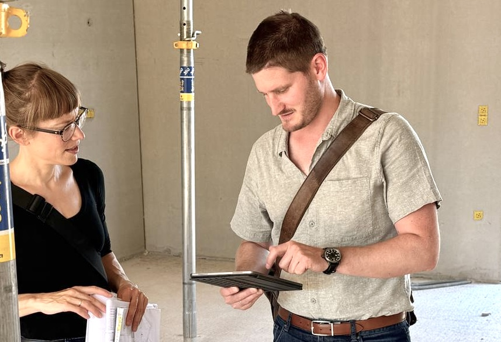
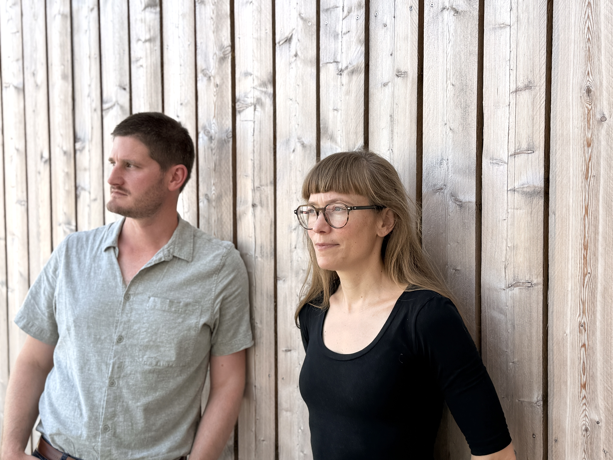
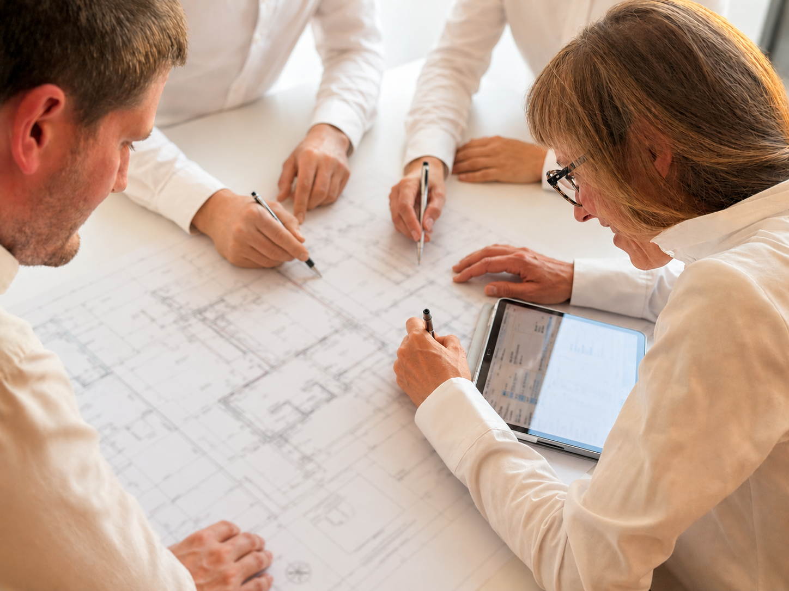
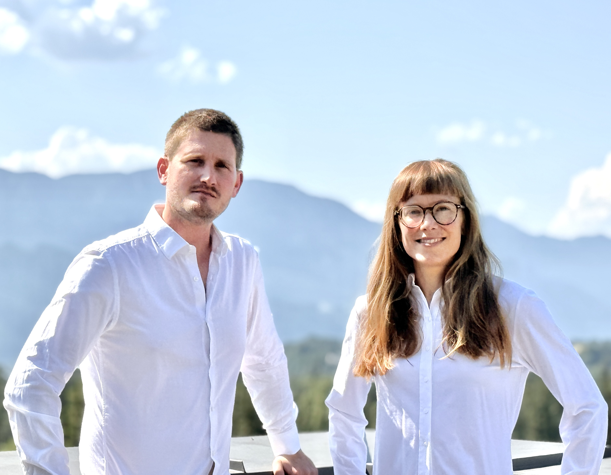

haushoch.
architektur + projektmanagement
SCROLL
haushoch. Interdisziplinäre GmbH mit ZT für Architektur und Baumeister
ist Ihr Architekturbüro für Salzburg, das Salzkammergut,
Oberösterreich und die Steiermark. Als Architektin, Ziviltechnikerin
und Baumeister begleiten wir Einfamilienhäuser, Mehrfamilienhäuser,
Sanierungen, Umbauten und öffentliche Bauprojekte strukturiert, verlässlich und zielgerichtet.
Aus Ideen werden gebaute Räume.
Wir freuen uns über Ihre Nachricht.
Wir entwickeln und realisieren Architektur über alle Leistungsphasen hinweg – von der konzeptionellen Machbarkeitsstudie bis zur Ausführung. Unser Schwerpunkt liegt auf qualitätsvollen Neu- und Umbauten für Wohnen, Arbeiten, Bildung, Gesundheit und den öffentlichen Raum.



Wir skizzieren und bauen Lebensräume, die berühren,
funktionieren und Freude im Alltag schaffen.
Wir stehen für Materialehrlichkeit und präzise
Detailausführung.
Weiterbauen im Bestand und dadurch Mehrwert schaffen,
der ergänzt und bestärkt.



Gute Architektur entsteht im Dialog. Wir denken, entwickeln und entwerfen gemeinsam mit unseren
Bauherrschaften – in direkten, klaren Kommunikationswegen.
Nachhaltige Architektur bedeutet für uns,
Verantwortung für die gebaute Umwelt zu übernehmen und
gestalterische, wirtschaftliche sowie ökologische Aspekte
in Einklang zu bringen.
Gemeinsam mit unseren Fachplanern entstehen durchdachte
Konzepte, die Qualität und Klarheit vereinen.

Hinter haushoch vereinen sich Architektur, Ziviltechnik und Baumeisterkompetenz unter einem Dach –
mit dem Anspruch, Bauprojekte mit Qualität, Verantwortung und Begeisterung umzusetzen.
Wir verwandeln Kundenwünsche in durchdachte und verständliche Architektur – mit kreativen Ideen, Fachwissen und
viel Gespür für jedes Projekt. Dabei hören wir genau zu und entwickeln gemeinsam Lösungen, die wirklich passen.
Und weil für uns nach dem Plan nicht Schluss ist, begleiten wir die Umsetzung
bis zur erfolgreichen Fertigstellung mit vollem Einsatz.

„Gute Projekte entstehen durch klare Prozesse, verlässliche Kommunikation und präzise Umsetzung.“
„Wir entwerfen Räume.
Wir bauen Lebensqualität.“
Sie beabsichtigen ein Bauvorhaben, eine Sanierung oder ein neues Nutzungskonzept?
Attersee · Salzburg · Grundlsee
haushoch. Interdisziplinäre GmbH mit ZT für Architektur und Baumeister
Informationspflicht lt. §5 E-Commerce-Gesetz
Firma:
haushoch.
Interdisziplinäre GmbH mit ZT für Architektur und Baumeister
Adresse:
Glanstraße 4a, 5082 Grödig, Österreich
Mail:
office@haushoch.at
Firmenbuchummer:
FN 682532z
Mitglied der Kammer der ZiviltechnikerInnen |
ArchitektInnen und IngenieurInnen Oberösterreich und Salzburg
Geschäftsführung:
DI Martha Mörzinger, Architektin, Ziviltechnikerin,
Tel: +43 664 7353 3935, Kanzlei Attersee
Ing. Stefan Ebner-Kalss, Baumeister,
Tel: +43 664 9307 0511
haushoch. Interdisziplinäre GmbH mit ZT für Architektur und Baumeister, Glanstraße 4a, 5082 Grödig · office@haushoch.at
Diese Website nutzt Google Analytics (Google Ireland Ltd.) zur Analyse der Nutzung. Dabei werden Cookies gesetzt und Daten ggf. an Google-Server in den USA übermittelt.
Google Analytics wird ausschließlich nach Ihrer Einwilligung (Art. 6 Abs. 1 lit. a DSGVO) über den Cookie-Banner geladen. Ohne Zustimmung erfolgt keine Datenübertragung.
Sie können Ihre Einwilligung jederzeit widerrufen:
Sie haben Recht auf Auskunft, Berichtigung, Löschung und Widerspruch. Beschwerden richten Sie an die österreichische Datenschutzbehörde (www.dsb.gv.at).